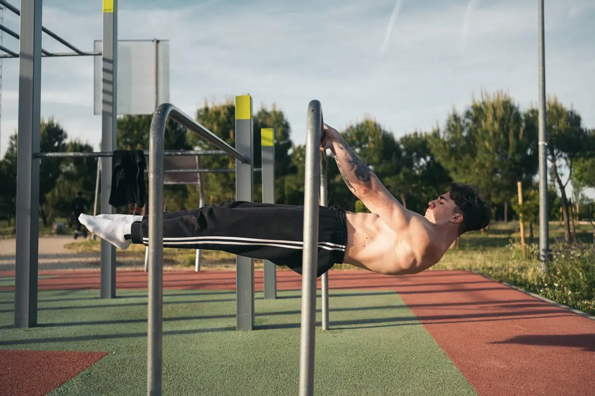
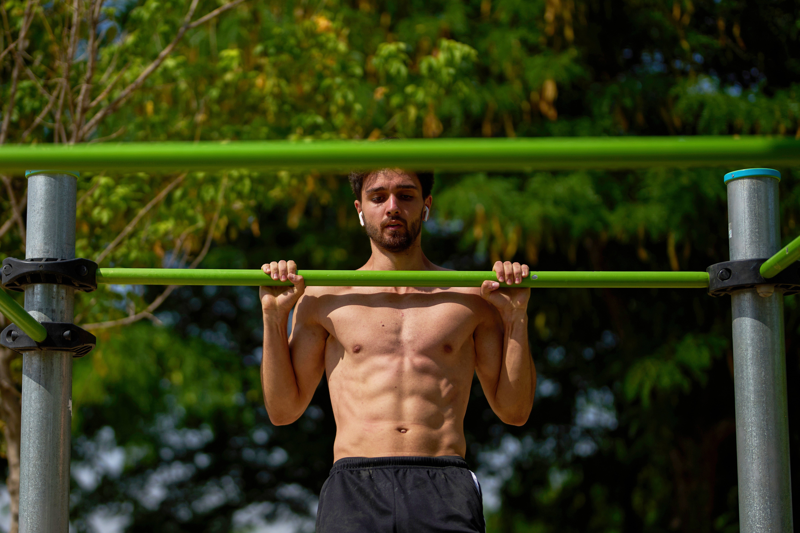

Introduction
Calisthenics is a form of exercise that uses our own body weight to build strength and improve fitness. Exercises like push-ups, squats and pull-ups are common examples. The best thing about calisthenics is that we do not need expensive equipment or a gym membership to get started. We can practise many exercises at home or in a park.
Calisthenics is suitable for beginners as well as experienced athletes. Beginners can start with simple movements and slowly learn more difficult exercises. It takes patience and regular practice to improve.

Benefits of Calisthenics
Improves Strength
Bodyweight exercises challenge different muscles and help us develop strength. Regular practice with correct technique can also improve our ability to perform everyday activities.
Saves Money
Most basic calisthenics exercises do not require special equipment. This makes it an affordable way to stay active. A small space and a safe place to exercise are often enough to get started.
Improves Body Control
Calisthenics helps improve balance, coordination and body control. With time and proper training, people may work towards advanced skills such as handstands.
Common Exercises
Some common calisthenics exercises include:
- Push-ups for upper-body strength.
- Squats for leg strength.
- Planks for core stability.
- Pull-ups for back and arm strength.

How to Get Started
- Choose exercises suitable for your ability.
- Learn the correct technique before increasing difficulty.
- Practise regularly and give your body enough rest.
- Improve gradually instead of rushing into advanced skills.
Exercise Comparison
| Exercise | Main Focus | Difficulty |
|---|---|---|
| Wall Push-ups | Upper body | Beginner |
| Squats | Legs | Beginner |
| Planks | Core | Beginner |
| Pull-ups | Back and arms | Intermediate |
Conclusion
Calisthenics is a simple and useful way to stay active. It helps develop strength, balance and body control without requiring expensive equipment. However, progress takes time, and it is important to learn proper technique and take enough rest. Anyone interested in fitness can explore calisthenics at their own level and improve step by step. Consistency and patience are the keys to making progress.